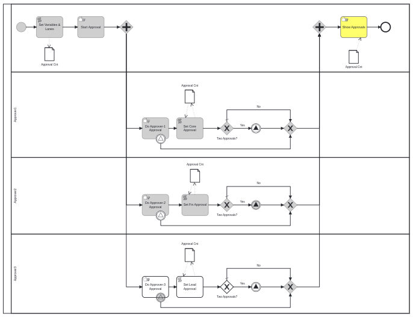

Felix on the SpiffWorkflow Discord Channel asked:
hey all, I am designing an approval process using spiff-workflow, a multi instances user task has 3 assignees, the task should complete if more than 2 users approve. Is SpiffWorkflow able to do this?
Alex (our modeling and business analysis expert) built the following diagram to think through how best to describe a set of parallel tasks that can interrupt each other in a way that would support Felix’s questions. In this diagram we model a case where three people are asked to approve a request, but only two of the three people actually need to take action for the request to go through.
Details are below, but here is a video that might be a little easier to follow.
Here is how the diagram looks in SpiffArena in our Process Instance Viewer. It is worth studying. Even though the diagram for each lane is identical, they each executed very differently. 
- The top lane is the “instigating user”, the person that started the process. Their first two tasks are grayed-out as completed. It’s the lanes below that are important …
- In the Approver 1 lane, the Approval happens (through a manual task). Then we check a Data Store (process-level variables) to see how many approvals were completed. In this first case, only one approval has happened, so that path of the parallel gateway is complete.
- In the Approver 2 lane, we do the same, only this time when we increment the Data Store variable, we have the two required approvals, which causes an Event to fire. This second parallel path is then complete.
- When the Event fires, it cancels the final waiting approval, and that final parallel path completes.
- At this point all three parallel paths are complete and the diagram closes out.
Here is the original BPMN file if you would like to try it out yourself.
Download Diagram